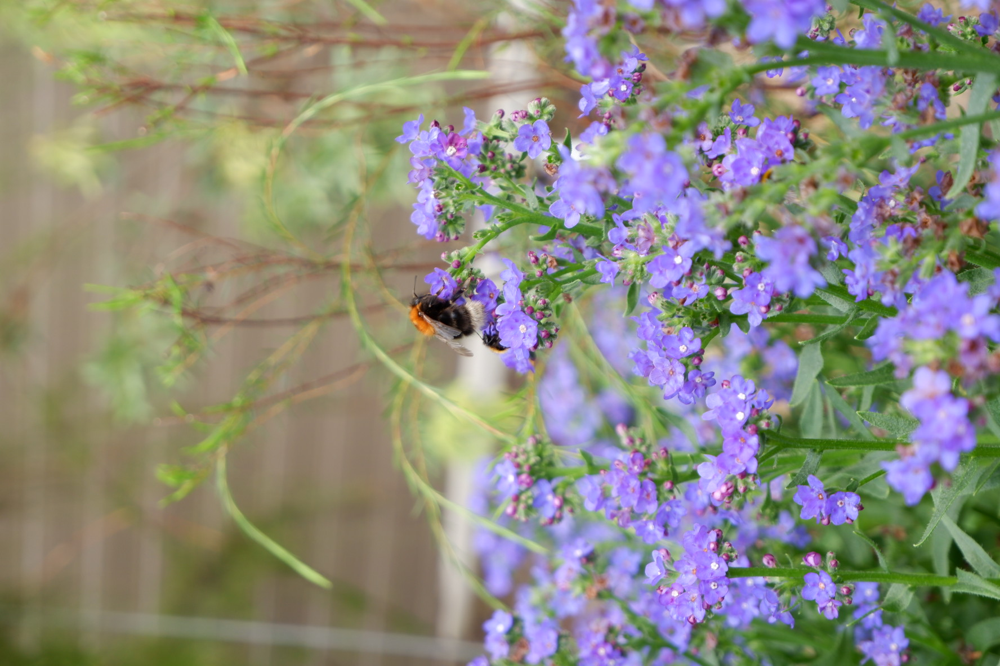

Photography
Lately I’ve been getting more and more into photography (This is usually exacerbated by a holiday). Let me use this as a way for you to get to know me just that little bit better.



Lately I’ve been getting more and more into photography (This is usually exacerbated by a holiday). Let me use this as a way for you to get to know me just that little bit better.